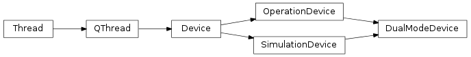
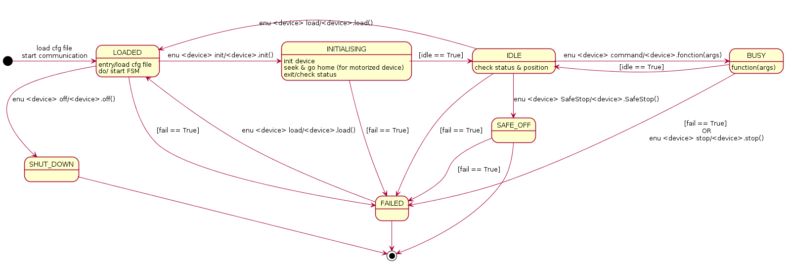
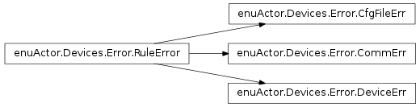

Bases: enuActor.QThread.QThread
All device (Shutter, BIA,...) should inherit this class
Override method QThread.handleTimeout(). Process while device is idling.
| Returns: | @todo |
|---|---|
| Raises: | CommErr |
Bases: enuActor.Devices.Device.OperationDevice, enuActor.Devices.Device.SimulationDevice
Switch between class following the device mode
Bases: enuActor.Devices.Device.Device
Device in operation mode:
Send string to interface
| Parameters: | input_buff (str.) – string to send to check com. |
|---|---|
| Returns: | returns from com. |
| Raises: | CommErr |
Docstring for start_communication.
Note
Need first to specify config file and device by calling load_cfg() or in the header of start_communication()
| Parameters: |
|
|---|---|
| Returns: | Communication object (example: serial.Serial object) |
| Raises: |
Bases: enuActor.Devices.Device.Device
Device in simulation mode:
Almost nothing
Interlock between self device and target device
Note
Choice of iterable is exclusive either self_position or target_position
| Parameters: |
|
|---|
Bases: enuActor.Devices.Error.RuleError
Docstring for CommErr. .. todo:: Specify file error
Bases: enuActor.Devices.Error.RuleError
CommErr are all the error related to the communication between PC and Device.
Bases: enuActor.Devices.Error.RuleError
DeviceErr are all the error related to the device and controller. When a DeviceErr occures the current state of the FSM go to fail.
Bases: enuActor.Devices.Device.DualModeDevice
SW device: BIA
Operation on/off bia
Todo
code to be changed when ne input received
| Parameters: |
|
|---|---|
| Returns: | 0 if OK |
| Raises: |
Initialise Bia.
Note
Should be improved after getting hardware status
It specifies parameters for light and strobe mode.
Note
Default parameters are located in cfg/devices_parameters.cfg file. This function only change default parameters of session.
Todo
Check values and types
| Parameters: |
|
|---|
Bases: enuActor.Devices.Device.DualModeDevice
SW device: Shutter
Check status byte 1, 3, 4, 5 and 6 from Shutter controller and return current list of status byte.
| Returns: | [sb1, sb3, sb5, sb6] with sbi list of byte from status byte |
|---|---|
| Raises: | CommErr |
Send status byte command and parse reply of device
| Parameters: | sb – byte 1, 3, 4, 5 or 6 |
|---|---|
| Returns: | array_like defining status flag |
| Raises: | CommErr |
Operation open/close shutter red or blue
| Parameters: | transition (str.) – str 'open' or 'close' |
|---|---|
| Returns: | 0 if OK |
| Raises: | CommErr, DeviceErr |
Bases: enuActor.Devices.Device.DualModeDevice
SW device: Fiber Slit Positionning Sub Assembly
| Raises: | CfgFileError |
|---|
| Parameters: | length – length in pixel |
|---|
Kind of decorator who check error after routine.
| Returns: | value receive from TCP |
||
|---|---|---|---|
| Raises: |
|
Move in focus (focus_axis) to length pixel
| Parameters: | length – @todo |
|---|
Initialise shutter. Here just trigger the FSM to INITIALISING and IDLE
| Returns: | @todo |
|---|---|
| Raises: | @todo |
MoveTo. Move to posCoord or to home if posCoord is None
| Parameters: |
|
||
|---|---|---|---|
| Raises: |
|
#: :RivCreateContent
Devices package is composed of 1 module/class Device and 1 module/class per device (Shutter, Bia, Slit, ...). It also contain an error class.

Device class has been created to deal with general behaviour of a device (close to an abstract class). So each device class (Bia, Shutter, ...) inherit them. Furthermore, as you can see above Device inherit from QThread and so possess all its properties such as a state machine attribute:
State Machine
Todo
Talk about SimulationDevice and OperationDevice
Two different config files are defines in cfg directory.
| devices_communication.cfg | devices_parameters.cfg |
[LINK]
SHUTTER: SERIAL
BIA: ETHERNET
SLIT: NOTSPECIFIED
[SHUTTER]
PORT: /dev/ttyS0
BAUDRATE: 19200
PARITY: N
STOPBITS: 1
BYTESIZE: 8
[BIA]
IP_SOURCE: 192.168.10.10
IP_DST: 192.168.10.100
MASK: 255.255.255.0
PORT: 23
BUFFER_SIZE: 1024
TIMEOUT: 5
[SLIT]
IP: 172.20.83.127
PORT: 5001
TIMEOUT: 5
|
[BIA]
frequency: 100
duration: 100
intensity: 1
[SHUTTER]
[BIA]
[SLIT]
home: 0, 0, 0, 0, 0, 0
dither_axis: 0, 0, 1
focus_axis: 0, 1, 0
magnification: 1
focus_value: 0.5
dithering_value: 2
|

Todo
add more details
Todo
add more details
Todo
add more details
Todo
add more details
Todo
add more details